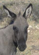

De: La Frikipedia, la enciclopedia extremadamente seria.
De: La Frikipedia, la enciclopedia extremadamente seria. De: La Frikipedia, la enciclopedia extremadamente seria.

|
Este artículo necesita ser ilustrado. Busca una afoto en nuestro depósito de imágenes o donde sea y ponla, pero que no sea pr0n, que se cabrea el señor del adSense y nos corta el grifo de los dólare. Y sin dólare no hay servidor... |
|  | ATENCIÓN El autor de este artículo es un auténtico borrico. Como no se ha leído las ayudas, se ha saltado a la torera un porrón de normas. Por tanto, hay que modificar el artículo, ya que de no haber nadie que lo modifique puede ser eliminado. |
Pelicula tambien llamada cuestion de orgullo en la que sale como actor collin farrel alias "colón" farrel haciendo de policia corrupto al que como le sale de las pelotas entrar en una tienda matar al dependiente follarse a su mujer y robar el dinero pos lo hace. Total que en una de sus cagadas el gran grupo de policias que lleva la jode pero hasta el puto fondo. la culpa de todo la tiene un hijo puta que ademas al final termina pareciendose a maradona (menuda mierda) porque el desgraciao avisa al drogadicto de que van a por el. Total k los maricones pendejos se cargan a 4 polis y crean un revuelo de la ostia. Entra en escena un maricon con buenas intenciones interpretado por edward norton (por cierto parece una jodida mafia ya que todos los polis son familia..) Bueno total que empiezan a investigar el maricon bueno y el del rabo grande que ace lo que le sale de los cojones y los dos llegan a la misma conclusion un pendejo hijo puta se los cargo y se llama angel tretzo o noseke ostias total que los polis malos van a casa de uno le agarran los cojones y dicen o me comes la polla o violo a tu mujer total que les da informacion despues de la limpieza de sables oportuna. Posteriormente buscando al cabron asesino de polis el bueno sarason descubre k el drogadicto que buscan tiene fantasias sexuales con patatas y pistolas (vete tu a saber lo que ace con ellas) y solo sabe decir palabras como pendejo, patata, matasanos y la mejor de todas mamahuevoo. Despues de este descubrimiento la zorra del yonki le dice lo del poli que se chivo. El poli malo claramente superior en todos los sentidos (sabeis que esta bien dotado) encuentra al hijo puta asesino de polis y le da su merecido (un rabo bien grande por la boca asta desgarrar sus intestinos) y un par de tiros para implicar al policia bujias. Si se les hace pesado no se preocupen es porque la pelicula dura 2 horacas y media.. y se hace igual o mas larga. Total que al final los inutiles de los polis malos que no saben tener su rabo guardao tienen que joderla hasta el fondo tanto que se los cargan a todos y cada uno de ellos menos a un bigotudo que tuvo suerte. Cuando el marica arresta a nuestro amigo con cojones (eso si un poco corrupto) se encuentran a los putos retrasados pandilleros de mierda que van de güays y no valen ni una puta mierda y quieren venganza por todas sus fechorias, asi que los muy hijos de puta se lo cargan indefenso, reteniendo al julapa que no es capaz de detenerlos. Total que pagas mas de 6 euracos por ver esta mierda peli y se te inchan tanto los cojones que te dan ganas de matar al primer capullo que te diga "joder as visto la peli es buenisima"..
Autor(es):